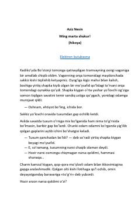

MMTramvayda qimmatchilik va shukronalik haqida bahslashayotgan yo'lovchilarning hajviy hikoyasi.
Aziz Nesinning ushbu hikoyasi tramvayda ketayotgan yo'lovchilarning hayot tashvishlari, qimmatchilik va shukronalik mavzusidagi o'ziga xos suhbati haqida hikoya qiladi. Asar jamiyatdagi kayfiyatlar va odamlarning fikr almashish jarayonini hajviy ruhda ochib beradi.